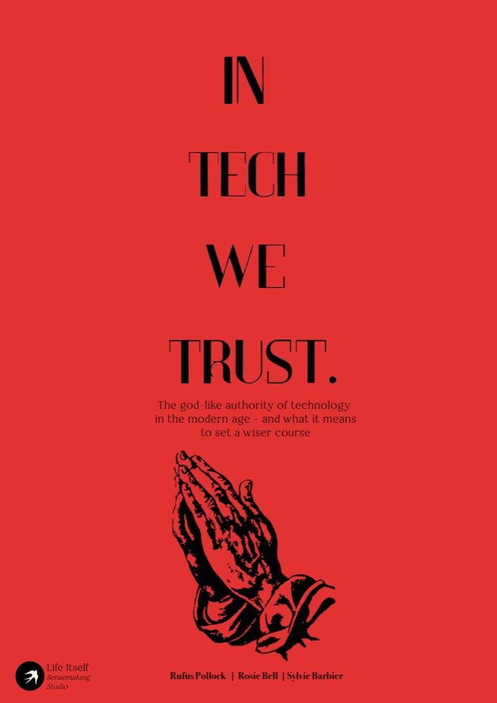

The god-like authority of technology in the modern age, and what it means to set a wiser course

This essay explores our late-modern relationship with technology, and asks what inner shift might help a future society find a wiser path. Modern society now relates to technology as a surrogate god; to steer a wiser course we need collective restraint grounded in a sense of interbeing, and choices guided by a fuller picture of human nature.
Keywords technology · modernity · cultural paradigm · collective action · interbeing · AI
About 9,800 words · 43 notes · Part of a series on the Second Renaissance